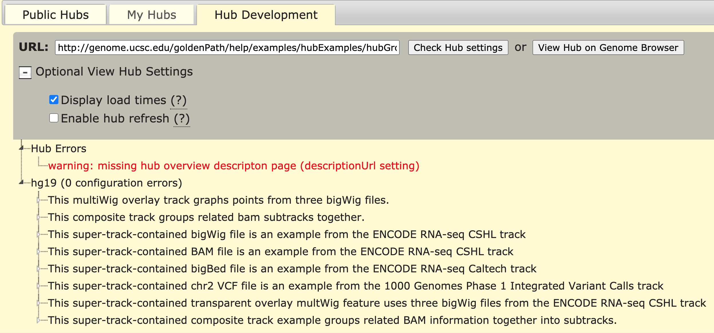

Additional resources
Questions and feedback are welcome.
Track hubs are web-accessible directories of genomic data that can be viewed on the UCSC Genome Browser (please note that hosting hub files on HTTP tends to work even better than FTP and local hubs can be displayed on GBiB). Track hubs can be displayed on genomes that UCSC directly supports, or on your own sequence. Hubs are a useful tool for visualizing a large number of genome-wide data sets. For example, a project that has produced several wiggle plots of data can use the hub utility to organize the tracks into composite and super-tracks, making it possible to show the data for a large collection of tissues and experimental conditions in a visually elegant way, similar to how the ENCODE native data tracks are displayed in the browser.
The track hub utility allows efficient access to data sets from around the world through the familiar Genome Browser interface. Browser users can display tracks from any public track hub that has been registered with UCSC. Additionally, users can import data from unlisted hubs or can set up, display, and share their own track hubs. Genome assemblies that UCSC does not support can be loaded and viewed with associated data.
The data underlying the tracks and optional sequence in a hub reside on the remote server of the data provider rather than at UCSC. Genomic annotations are stored in compressed binary indexed files in bigBed, bigBarChart, bigGenePred, bigNarrowPeak, bigMethyl, bigPsl, bigChain, bigInteract, bigMaf, bigWig, BAM, CRAM, HAL, hic or VCF format that contain the data at several resolutions. In the case of assemblies that UCSC does not support, genomic sequence is stored in the efficient twoBit format. When a hub track is displayed in the Genome Browser, only the relevant data needed to support the view of the current genomic region are transmitted rather than the entire file. The transmitted data are cached on the UCSC server to expedite future access. This on-demand transfer mechanism eliminates the need to transmit large data sets across the Internet, thereby minimizing upload time into the browser.
The track hub utility offers a convenient way to view and share very large sets of data. Individuals wishing to display only a few small data sets may find it easier to use the Genome Browser custom track utility. As with hub tracks, custom tracks can be uploaded to the UCSC Genome Browser and viewed alongside the native annotation tracks. Custom tracks can be constructed from a wide range of data types; hub tracks are limited to compressed binary indexed formats that can be remotely hosted. However, the custom tracks utility does not offer the data persistence and track configurability provided by the track hub mechanism: hub tracks can be grouped into composite or super-tracks and configured to display the data using a wide variety of options. There is no way to create a browser on your own sequence with custom tracks. In general, for users who have large data sets that would be prohibitive to upload, need to ensure the persistence of their data, or would like to take full advantage of track functionality, or create a browser on sequence not natively supported by UCSC or a genome browser mirror, track hubs are a better solution. Both mechanisms give data providers the flexibility to directly add, update, and remove data from their display as needed.
Assembly Data Hubs extend the functionality of Track Data Hubs to assemblies that are not hosted
natively on the Browser. Assembly Data Hubs were developed to address the increasing need for
researchers to annotate sequence for which UCSC does not provide an annotation database. They allow
researchers to include the underlying reference sequence, as well as data tracks that annotate that
sequence. Sequence is stored in the UCSC twoBit format, and the annotation tracks are stored in the
same manner as Track Data Hubs. Assembly hubs also support chromAlias and chromAuthority, which let the Browser map chromosome names
across different naming schemes and display a preferred convention. A default naming scheme can be
set using the chromAuthority setting. For more information on how to set up your own
Assembly Data Hub, please refer to the Assembly Hub User Guide
and see the Quick Start Guide to
Assembly Hubs.
The Genome Browser provides links to a collection of public track hubs that have been registered with UCSC. To view a list of the public track hubs available, click into the blue navigation bar "My Data" and then "Track Hubs" to reach the Public Track Hubs page. You can click links in the "Description" column to see details about a particular Hub. To view a hub's data, click on an assembly name on the row of your hub or the "Connect" button. If you clicked the "Connect" button, choose your assembly or click the "Genome Browser" link from the top blue bar to be brought to the default assembly. The selected hub tracks will be listed in a separate track group below the browser image and can be configured just like native browser tracks. Exercise caution when viewing a wide region that requires the Genome Browser to display a large number of track features: the browser display may time out.
In addition to the Public Hubs listed, it is possible to load your own track hub or one created by a colleague. To add an unlisted hub, open the Track Hubs page and click the Connected Hubs tab. To import a new hub, type or paste its URL into the text box, then click the "Add Hub" button. If successful, your track hub will appear on that page.
Tracks accessed through a hub can be used in Genome Browser sessions and custom tracks in the same manner as other tracks. The data underlying data hub tracks can be viewed, manipulated, and downloaded using the UCSC Table Browser. To remove a track hub from your Genome Browser display, click the "Disconnect" button on the Track Hubs page.
For confidential or private data, please note that unlisted hubs are not secure. The URL helps to hide the location of the data; it is a simple barrier of obscurity. Please also know that hubs can be loaded from local directories when using GBiB.
When sharing track hubs on a single assembly, we recommend using Saved Sessions (especially for publications). These have the advantages of being single-click access and sharing a full browser configuration. If you are just starting, an overview of the process is to make the hub on your web-accessible server, attach the hub to the Genome Browser, configure browser position and related tracks, then save your named session and share the session link. Your session links will be in the following format with your chosen username and session name:
For additional information, see sharing Saved Sessions and backing up custom data.
Hubs can be loaded into the URL using the hubUrl= parameter. This parameter
takes input similar to the track hub input box.
Native UCSC supported genomes can be loaded into the URL using the db= parameter while
non-natively supported genomes such as assembly hubs or GenArk hubs use the genome=
parameter. URL parameters can be combined by using &.
The following example links to the hg19 genome database and an example track hub using the db= and the hubUrl= parameters:
http://genome.ucsc.edu/cgi-bin/hgTracks?db=hg19&hubUrl=https://genome.ucsc.edu/goldenPath/help/examples/hubDirectory/hub.txt
Track hubs' track visibility can also be changed from the URL parameters. As an example, the following link specifies:
https://genome.ucsc.edu/cgi-bin/hgTracks?db=hg38&hubUrl=http://hgdownload.gi.ucsc.edu/hubs/gtex/hub.txt&hideTracks=1>exRnaSignalMaleYoung_hideKids=1>exRnaSignalMaleYoung=full>exRnaSignalSRR1311243=full&ignoreCookie=1
guidelines=on/off - activate or deactivate the blue guidelineshgFind.matches=<listOfNames> - highlight features given their nameshgt.reset=1 - show only the default trackshgt.toggleRevCmplDisp=1 - show the reverse-complementhgt.labelWidth=<number> - set the size of the left-side label areahideTracks=1 - hide all trackshideTracks=1&<trackName>=full|dense|pack|hide - hide all tracks and show
other trackshighlight=<db>.<chrom>:<chromStart>-<chromEnd>#<color>|...ignoreCookie=1 - do not load the user's existing settings saved
in the internet browser's UCSC Genome Browser cookie. This means that the link will show the
Genome Browser default settings such as track selections, custom tracks, and track hubs. Any
changes you make in this new session will, however, affect the user's settings. E.g., if you add a
track in this new window, and come back to the genome browser later, the track will still be there.
This setting is useful if a website wants to link to the Genome Browser, starting with a "clean
slate" but believes the user will come back to the Genome Browser expecting the changes to still be
there.ruler=hide - hide the ruler at the top of the browser imageoligoMatch=pack&hgt.oligoMatch=<dnaSeq> - switch on the Short Match track and
highlight a matching sequencepix=<number> - set the width of the image in pixelstextSize=<number> - set the size of text font<trackName>=full|pack|dense|hide - show your current tracks, adding a track
and set it to full, pack or dense visibility or hide it<trackName>_imgOrd=<number> - vertically orders the tracks on the image
based on the numbers provided. You need to specify an order for every visible track when using this
parameter<trackName>.heightPer=<number> - sets the height of the a bigWig track
in pixels<trackName>_hideKids=1 - hides a specific super track's individual tracks<trackName>_sel=1 - selects specific subtrack to be 'checked', allowing
display
You can create a URL with multiple Track Hubs using the hubUrl= parameter. URL
parameters can be combined by using &. For example, using the following track hubs:
ENCODE DNA Trackhub https://storage.googleapis.com/gcp.wenglab.org/hubs/dna20/hub.txt
JASPAR TFBS http://expdata.cmmt.ubc.ca/JASPAR/UCSC_tracks/hub.txt
ReMap 2022 Regulatory Atlas https://remap.univ-amu.fr/storage/public/hubReMap2022/hub.txt
The combination of the three hubs allows the creation of the following URL that can load the three hubs on the Genome Browser.
https://genome.ucsc.edu/cgi-bin/hgTracks?db=hg38&hubUrl=https://storage.googleapis.com/gcp.wenglab.org/hubs/dna20/hub.txt&hubUrl=http://expdata.cmmt.ubc.ca/JASPAR/UCSC_tracks/hub.txt&hubUrl=https://remap.univ-amu.fr/storage/public/hubReMap2022/hub.txt
The following example links to an assembly hub using the hubUrl= and
genome= parameters where in the example, genome=araTha1, is the assembly
name set for genome in the genomes.txt file. URL parameters can be combined by using &.
https://genome.ucsc.edu/cgi-bin/hgTracks?genome=araTha1&hubUrl=http://genome.ucsc.edu/goldenPath/help/examples/hubExamples/hubAssembly/plantAraTha1/hub.txt
hubClear=connects the hub and disconnects other hubs that are in the same directoryhgHubConnectReplacing hgTracks with this parameter connects the hub and redirects the link to the
Track Data Hubs pagehgHub_do_firstDb=1
uses the first database in genomes.txthgHub_do_redirect=on
redirects the attached hub to the Gateway page
The following example link connects the hub and redirects the link to the Gateway page to display
the hub's description html page, which is defined in the genomes.txt by the htmlPath
setting, by using hgHubConnect, hgHub_do_redirect=on,
hgHubConnect.remakeTrackHub=on, hgHub_do_firstDb=1, and
hubUrl.
http://genome.ucsc.edu/cgi-bin/hgHubConnect?hgHub_do_redirect=on&hgHubConnect.remakeTrackHub=on&hgHub_do_firstDb=1&hubUrl=http://genome.ucsc.edu/goldenPath/help/examples/hubExamples/hubAssembly/plantAraTha1/hub.txt
You can also link to the Gateway page to display the hub's description html page by using the
hgGateway and genome parameters. The following example links the hub to
the Gateway page:
http://genome.ucsc.edu/cgi-bin/hgGateway?genome=araTha1&hubUrl=http://genome.ucsc.edu/goldenPath/help/examples/hubExamples/hubAssembly/plantAraTha1/hub.txt
You can create a URL for an assembly hub with track hubs using a combination of the
hubUrl= and genome= URL parameters. URL parameters can be combined by
using &.For example, using the following assembly hub and track hubs:
Arabidopsis thaliana assembly hub https://genome.ucsc.edu/goldenPath/help/examples/hubExamples/hubPlants/cshl2013/hub.txt
ReMap 2022 Regulatory Atlas https://remap.univ-amu.fr/storage/public/hubReMap2022/hub.txt
UniBind 2021 Robust hub https://unibind.uio.no/static/data/latest/UniBind_hubs_Robust/UCSC/hub.txt
The combination of the three hubs, along with genome=araTha1, allows for the creation of
the following URL that can load the three hubs on the Genome Browser.
https://genome.ucsc.edu/cgi-bin/hgTracks?genome=araTha1&hubUrl=https://genome.ucsc.edu/goldenPath/help/examples/hubExamples/hubPlants/cshl2013/hub.txt&hubUrl=https://remap.univ-amu.fr/storage/public/hubReMap2022/hub.txt&hubUrl=https://unibind.uio.no/static/data/latest/UniBind_hubs_Robust/UCSC/hub.txt
When creating a track hub for a GenArk assembly, there is no need to do any attaching of the
assembly hub itself via the hubUrl= URL parameter. GenArk hubs will automatically
attach themselves if the track hub mentions the GCA_ or GCF_ name identifier of the assembly hub.
Simply load the track hub on the Genome Browser, and the assembly hub will automatically appear. For
example, the following example track hub will load an additional track for the pig (GCA_002844635.1)
GenArk assembly.
To create a link to the track hub that references a GenArk assembly, the
genome=GCA_002844635.1 and hubUrl= URL parameters can be used like in the
following example:
https://genome.ucsc.edu/cgi-bin/hgTracks?genome=GCA_002844635.1&hubUrl=https://genome.ucsc.edu/goldenPath/help/examples/hubExamples/hubGenArkExample/genArkTrackHub/hub.txt
This section provides a step-by-step description of the process used to set up a track hub on your own server. If you would like information about how to attach a track hub to an existing assembly hub, please refer to the following FAQ entry.
To create your own hub you will need:
The files are placed on the server in a file hierarchy like the one shown in Example 1. Users experienced in setting up Genome Browser mirrors that contain their own data will find that setting up a track hub is similar, but is usually much easier. Depending on the number and complexity of the data sets, a track hub can typically be set up in a day or two. It is generally easiest to run the command-line data formatting programs in a Linux programming environment, although it's possible to manipulate smaller data sets using Mac OS-X as well.
Note: there is now a useOneFile on hub setting that allows the hub
properties to be specified in a single file. More information about this setting can be found on the
Genome Browser User Guide. If you would
like to add metadata to your track hub, the following metadata guide
contains examples of how to include the information in your tracks.
Example 1: Directory hierarchy for a hub containing DNase and RNAseq data for the hg18 and hg19 human genome assemblies. The hg18/ and hg19/ subdirectories contain the assembly-specific data files.
myHub/ - directory containing track hub files
hub.txt - a short description of hub properties
genomes.txt - list of genome assemblies included in the hub data
hg19/ - directory of data for the hg19 (GRCh37) human assembly
trackDb.txt - display properties for tracks in this directory
dnase.html - description text for a DNase track
dnaseLiver.bigWig - wiggle plot of DNase in liver
dnaseLiver.bigBed - regions of active DNase
liverGenes.bigGenePred - gene annotations of genes over-expressed in liver tissue
dnaseLung.bigWig - wiggle plot of DNase in lung
dnaseLung.bigWig - regions of active DNase
...
rnaSeq.html - description text for an RNAseq track
rnaSeqLiver.bigWig - wiggle plot of RNAseq data in liver
rnaSeqLiver.bigBed - intron/exon lists for liver
rnaSeqLung.bigWig - wiggle plot of RNAseq data in lung
rnaSeqLung.bigBed - intron/exon lists for lung
hg18/ - directory of data for the hg18 (Build 36) human assembly
trackDb.txt - display properties for tracks in this directory
dnase.html - description text for a DNase track
dnaseLiver.bigWig - wiggle plot of DNase data in liver
dnaseLiver.bigBed - regions of active DNase
dnaseLung.bigWig - wiggle plot of DNase data in lung
dnaseLung.bigWig - regions of active DNase
...
rnaSeq.html - description text for an RNAseq track
rnaSeqLiver.bigWig - wiggle plot of RNAseq data in liver
rnaSeqLiver.bigBed - intron/exon lists for liver
rnaSeqLung.bigWig - wiggle plot of RNAseq data in lung
rnaSeqLung.bigBed - intron/exon lists for lung
Step 1. Format the data
The data tracks provided by a hub must be formatted in one of the compressed binary index formats
supported by the Genome Browser:
bigWig,
bigBed,
bigGenePred,
bigChain,
bigNarrowPeak,
bigMethyl,
bigBarChart,
bigInteract,
bigPsl,
bigMaf,
hic,
BAM,
CRAM,
HAL or
VCF.
Many of these formats also support several different chromosome aliases (e.g. '1' or
'NC_000001.11' in place of 'chr1').
bigWig - The bigWig format is best for displaying continuous value plot data, such as read depths from short read sequencing projects or levels of conservation observed in a multiple-species alignment. A bigWig file contains a list of chromosome segments, each of which is associated with a floating point value. When graphed, the segments may appear as a big "wiggle". Although each bigWig file can contain only a single value for any given base, bigWig tracks are often combined into "container multiWig" or "compositeTrack on" tagged tracks. For information on creating and configuring bigWig tracks, see the bigWig Track Format help page.
bigBed - BigBed files are binary indexed versions of Browser Extensible Data (BED) files. BED format is useful for associating a name and (optionally) a color and a score with one or more related regions on the same chromosome, such as all the exons of a gene. See the bigBed Track Format help page for information on creating and configuring bigBed tracks.
bigGenePred - BigGenePred files are binary indexed versions of Browser Extensible Data (BED) files with an extra eight fields that are useful for describing gene predictions that are modeled after the fields in genePred files. BigGenePred format is useful for associating a name and (optionally) a color and a score with one or more related regions on the same chromosome, such as all the exons of a gene. See the bigGenePred Track Format help page for information on creating and configuring bigGenePred tracks.
bigChain - BigChain files are binary indexed versions of chain files. BigChain format is useful for large pairwise alignment data sets. See the bigChain Track Format help page for more information on creating and configuring bigChain tracks.
bigMethyl - BigMethyl files are binary indexed versions of Browser Extensible Data (BED) files with first nine fields being the same as bed, and an extra nine fields that contain various scores. See the bigMethyl Track Format help page for information on creating and configuring bigMethyl tracks.
bigNarrowPeak - BigNarrowPeak files are binary indexed versions of Browser Extensible Data (BED) files with first six fields being the same as bed, and an extra four fields that contain various scores and the offset of the base within the block that is the peak. See the bigNarrowPeak Track Format help page for information on creating and configuring bigNarrowPeak tracks.
bigBarChart - BigBarChart files are binary indexed versions of barChart files. BigBarChart format is useful for bringing barChart display into track hubs, and supports schema customization and label configuration that is not supported for regular barChart format. See the barChart Track Format help page for information on creating and configuring bigBarChart tracks.
bigInteract - BigInteract files are binary indexed versions of interact files. BigInteract format is useful for bringing interact display into track hubs, and supports schema customization and label configuration that is not supported for regular interact format. See the interact Track Format help page for information on creating and configuring bigInteract tracks.
bigPsl - BigPsl files are binary indexed versions of PSL files. BigPsl format is useful for large data sets created by BLAT or other tools. See the bigPsl Track Format help page for more information on creating and configuring bigPsl tracks.
bigMaf - BigMaf files are binary indexed versions of MAF files. BigMaf format is useful for large multiple alignment data sets. See the bigMaf Track Format help page for more information on creating and configuring bigMaf tracks.
hic - Hic files are binary files that store contact matrices from chromatin conformation experiments. This format is useful for displaying interactions at a scale and depth that exceeds what can be easily visualized with the interact and bigInteract formats. See the hic Track Format help page for more information on creating and configuring hic tracks.
BAM - BAM files contain alignments of (generally short) DNA reads to a reference sequence, usually a complete genome. BAM files are binary versions of Sequence Alignment/Map (SAM) format files. Unlike bigWig and bigBed formats, the index for a BAM file is in a separate file, which the track hub expects to be in the same directory with the same root name as the BAM file with the addition of a .bai suffix. See the BAM Track Format help page for more information.
CRAM - The CRAM file format is a more dense form of BAM files with the benefit of saving much disk space. While BAM files contain all sequence data within a file, CRAM files are smaller by taking advantage of an additional external "reference sequence" file. This file is needed to both compress and decompress the read information. See the CRAM Track Format help page for more information.
HAL - HAL (Hierarchical Alignment Format) is a graph-based structure to efficiently store and index multiple genome alignments and ancestral reconstructions. HAL files are represented in HDF5 format, an open standard for storing and indexing large, compressed scientific data sets. HAL is the native output format of the Progressive Cactus alignment pipeline, and is included in the Progressive Cactus installation package.
VCF - VCF (Variant Call Format) files can contain annotations of single nucleotide variants, insertions/deletions, copy number variants, structural variants and other types of genomic variation. When a VCF file is compressed and indexed using tabix (available here), it can be used as a data track file. Unlike bigWig and bigBed formats, the tabix index is in a separate file, which the track hub expects to be in the same directory with the same root name as the VCF file with the addition of a .tbi suffix. See the VCF Track Format help page for more information.
Step 2. Create the track hub directory
Create a track hub directory in an Internet-accessible location on your web or ftp server. This
directory will contain the hub.txt and genomes.txt files that define properties of the track hub and
a subdirectory for each of the genome assemblies covered by the hub track data.
Note: there is now a useOneFile on hub setting that allows the hub
properties to be specified in a single file. More information about this setting can be found on the
Genome Browser User Guide.
Step 3. Place the track data files in an Internet-accessible location
The data files underlying a track in a hub do not have to reside in the track hub directory or even
on the same server, but they must be accessible via the Internet. The track hub utility supports
Internet protocols such as http://, https://, and ftp://, as well as file paths relative to the hub
directory hierarchy. The location of a track file is defined by its bigDataUrl tag in the
associated trackDb.txt file (Step 7).
Step 4. Create the hub.txt file
Within the hub directory, create a hub.txt file containing a single stanza with up to six fields
that define properties of the track hub:
hub hub_name
shortLabel hub_short_label
longLabel hub_long_label
genomesFile genomes_filelist
email email_address
descriptionUrl descriptionUrl hub - a single-word name of the directory containing the track hub files. Not displayed to hub users. This must be the first line in the hub.txt file.
shortLabel - the short name for the track hub. Suggested maximum length is 17 characters. Displayed as the hub name on the Track Hubs page and the track group name on the browser tracks page.
longLabel - a longer descriptive label for the track hub. Suggested maximum length is 80 characters. Displayed in the description field on the Track Hubs page.
genomesFile - the relative path of the genomes.txt file, which contains the list of genome assemblies covered by the track data and the names of their associated configuration files. By convention the genomes.txt file is located in the same directory as the hub.txt file.
email - the contact to whom questions regarding the track hub should be directed.
descriptionUrl - URL to HTML page with a description of the hub's contents. This can be relative to the directory which holds hub.txt. This file is assumed to be HTML, and if the hub is a UCSC public hub, this HTML will be crawled nightly by UCSC to build an index with which public hubs can be searched. If present, clicks on the shortLabel will open this HTML in a new tab. This field is optional.
useOneFile on
- only use this setting if your hub is displaying one genome and
if you wish to put all information into only one file: hub.txt. This setting allows you
to put the text lines of genomes.txt
and trackDb.txt all into the singular
hub.txtfile. To learn more about
this setting click useOneFile on
and see a working example here.
Example 2: Sample hub.txt file defining attributes for the track hub shown in Example 1.
hub UCSCHub
shortLabel UCSC Hub
longLabel UCSC Genome Informatics Hub for human DNase and RNAseq data
genomesFile genomes.txt
email genome@soe.ucsc.edu
descriptionUrl ucscHub.html
Step 5. Create the genomes.txt file
Create a genomes.txt file within the track hub directory that contains a two-line stanza that must
be separated by a line for each genome assembly that is supported by the hub data. Each stanza shows
the location of the trackDb file that defines display properties for each track in that
assembly, as well as an optional metadata storage file
genome assembly_database_1 trackDb assembly_1_path/trackDb.txt metaTab assembly_1_path/tabSeparatedFile.txt
genome assembly_database_2 trackDb assembly_2_path/trackDb.txt metaDb assembly_2_path/tagStormFile.txt
genome - a valid UCSC database name. Each stanza must begin with this tag and each stanza must be separated by an empty line.
trackDb - the relative path of the trackDb file for the assembly designated by the genome tag. By convention, the trackDb file is located in a subdirectory of the hub directory. However, the trackDb tag may also specify a complete URL.
metaDb - the path to an optional tagStorm file that has the metadata for each track. Each track with metadata should have a "meta" tag specified in the trackDb stanza for that track and a "meta" tag in the tagStorm file.
metaTab - the path to an optional tab separated file that has the metadata for each track. Each track with metadata should have a "meta" tag specified in the trackDb stanza for that track and a "meta" tag in the tab separated file. The first line of the TSV file should start with a '#' and have the field names for each column, one of them being "meta".
If this genomes.txt file is for an assembly that does not have native support in the browser, the following fields must also be present:
twoBitPath - refers to the .2bit file containing the sequence for this assembly. Typically this file is constructed from the original fasta files for the sequence using the kent program faToTwoBit. See here for instructions on how to build a 2bit file.
groups - a file which defines the track groups on this Genome Browser. Track groups are the sections of related tracks grouped together under the primary genome browser graphics display image. The groups.txt file defines the grouping of track controls under the primary Genome Browser image display. The example referenced here has the usual definitions as found in the UCSC Genome Browser. Each group is defined, for example the Mapping group:
name map
label Mapping
priority 2
defaultIsClosed 0 The name is used in the trackDb.txt track definition group, to assign a particular track to this group. The label is displayed on the genome browser as the title of this group of track controls The priority orders this track group with the other track groups. The defaultIsClosed determines if this track group is expanded or closed by default. Values to use are 0 or 1.
description - will be displayed for user information on the gateway page and most title pages of this genome assembly browser. It is the name displayed in the assembly pull-down menu on the browser gateway page.
organism - the string which is displayed along with the description on most title pages in the Genome Browser. Adjust your names in organism and description until they are appropriate. This organism name is the name that appears in the genome pull-down menu on the browser gateway page.
scientificName - specifies the scientific name for the assembly.
defaultPos - specifies the default position the genome browser will open when a user first views this assembly. This is usually selected to highlight a popular gene or region of interest in the genome assembly.
orderKey - used with other genome definitions at this hub to order the genome pull-down.
htmlPath - refers to an html file that is used on the gateway page to display information for a novel assembly.
genome hg18
trackDb hg18/trackDb.txt
genome hg19
trackDb hg19/trackDb.txt
genome newOrg1
trackDb newOrg1/trackDb.txt
twoBitPath newOrg1/newOrg1.2bit
groups newOrg1/groups.txt
description Big Foot V4
organism BigFoot
defaultPos chr21:33031596-33033258
orderKey 4800
scientificName Biggus Footus
htmlPath newOrg1/description.html
Step 6. Create the genome assembly subdirectories
Within the track hub directory, create a subdirectory for each of the genome assemblies that have
track data in the hub. The subdirectory names must have a 1:1 correspondence with the database names
defined by the genome tags in the genomes.txt file.
Step 7. Create the trackDb.txt files
The trackDb.txt file, which is based on the Genome Browser .ra format, is the most complicated of
the text files in the hub directory. It contains a stanza for each of the data files for the given
assembly that defines display and configuration properties for the track. If the tracks are grouped
into larger entities, such as composite or super-tracks, the larger entities will have a stanza in
the file as well.
The Track Database Definition Document will help you understand how to create a trackDb.txt file. This document describes how to declare dataset display settings and values, and indicates the support level for each setting. While there are over 100 track settings supported at UCSC, other sites that display hubs have more limited settings support. To further portability of hubs, we have used input from other sites to identify a "base" subset of the "full" settings list, and the document has been assigned a version number. See the document introduction for a fuller explanation.
At a minimum, each track in the trackDb.txt file must contain the "required" settings:
track track_name
bigDataUrl track_data_URL
shortLabel short_label
longLabel long_label
type track_type track - the symbolic name of the track. The first character must be a letter, and the remaining characters must be letters, numbers, or under-bar ("_"). Each track must have a unique name. This tag pair must be the first entry in the trackDb.txt file.
bigDataUrl - the file name, path, or Web location of the track's data file. The bigDataUrl can be a full URL. If it is not prefaced by a protocol, such as http://, https:// or ftp://, then it is considered to be a path relative to the trackDb.txt file.
shortLabel - the short name for the track displayed in the track list, in the configuration and track settings, and on the details pages. Suggested maximum length is 17 characters.
longLabel - the longer description label for the track that is displayed in the configuration and track settings, and on the details pages. Suggested maximum length is 80 characters.
type - the format of the file specified by bigDataUrl. Must be either bigWig, bigBed, bigBarChart, bigGenePred, bigInteract, bigNarrowPeak, bigChain, bigPsl, bigMaf, hic, bam, halSnake or vcfTabix (Note: use type bam for CRAM files). If the type is bigBed, it may be followed by an optional number denoting the number of fields in the bigBed file (e.g., "type bigBed 12" for a file with 12 fields or "type bigBed 12 +" for a file that contains additional non-standard columns). If no number is given, a default value of 3 is assumed (a very limited display that omits names, strand information, and exon boundaries).
Example 4: Sample trackDb.txt file containing two simple tracks.
track dnaseSignal
bigDataUrl dnaseSignal.bigWig
shortLabel DNAse Signal
longLabel Depth of alignments of DNAse reads
type bigWig
track dnaseReads
bigDataUrl dnaseReads.bam
shortLabel DNAse Reads
longLabel DNAse reads mapped with MAQ
type bam Suggestions:
Default subtracks for composite For each composite, it is recommended that a subset of subtracks are "selected" (on) by default. This way, when a user turns the composite from hide to another visibility, they will see tracks displayed in the browser.
Default composites within a super-track: For super-tracks that you don't want displaying by default when your track hub is turned on, it is recommended that some (or all) composites within the super-track be set to dense (or some visibility other than hide) by default and that the super-track be set to hide by default. This way, if a user changes a super-track from hide to show from the controls under the browser image, tracks are displayed. To implement, change the visibility line in trackDb of the super-tracks to hide and the visibility lines of all or some of the composite tracks within to dense (or some visibility other than hide).
hgTrackUi controls: In addition to the controls for each view (click on the title of the view drop-down), there is often another set of controls above the view drop-downs (just under the "Overall display mode"). This set of controls is not associated with a particular view and clashes with the view controls. It is recommended to remove the controls that are not associated with a particular view.
Step 8. Create track description files
Each track in the hub may have an associated description file that describes the track to viewers.
The file provides detailed information about the data displayed in the track, including methods used
to produce and validate the data, background information, display conventions, acknowledgments, and
reference publications. The description file, which must be in HTML format, is inserted into the
track configuration page that displays when the user clicks on the track's short label. It also
displays on the track details page that is shown when the user clicks on a feature in the track
image.
The track description file must have the same name as the symbolic name for the track (defined by the track tag in the trackDb.txt file) with a suffix of .html. For instance, a description file associated with the track named "dnaseSignal" in Example 4 would be named "dnaseSignal.html". The description file must reside in the same directory as the trackDb.txt file.
Both parent and child tracks within a super-track can have their own description files. If the description file is not present, the corresponding sections of the track settings and details pages are left blank. Only one description page can be associated with composite and multiWig tracks; the file name should correspond to the symbolic name of the top-level track in the composite.
To organize tracks within your track hub, you can utilize the groups setting, which references a separate text file that defines track groups for display under the genome browser graphic.
The groups setting can be applied to a UCSC genome, a GenArk assembly, or an assembly hub. These track hub groups are kept separate from other track hubs and the native UCSC Genome Browser track groups, allowing for greater organizational flexibility. For instance, you can add a "genes" group without causing conflicts or confusion.
You can define groups with names like "Category 1", "Category 2", and "Category 3". These group names are specified in the "groups.txt file ", which defines the track groups. Below is an example stanza demonstrating how to define these groups:
name category1
label Category 1name category2
label Category 2
priority 1name category3
label Category 3
defaultIsClosed 1You can access the complete "groups.txt " file containing these group definitions here: groups.txt.
Within this file:
After defining the "groups.txt" file, tracks can be assigned to a specific group within the "trackDb.txt" file using the group setting. For example, to assign the "bigBed1" track to the "category1" group, you could use the following stanza:
track bigBed1
bigDataUrl https://hgdownload.gi.ucsc.edu/gbdb/hg38/ncbiRefSeq/ncbiRefSeqGenomicDiff.bb
shortLabel bigBed example 1
longLabel This bigBed file is an example from the NCBI RefSeq Diffs Track
type bigBed
group category1
visibility denseThe full "trackDb.txt" file, which includes the "bigBed1" track and additional examples, can be viewed here: trackDb.txt.
Next, incorporate the "groups.txt" file with the groups setting into the genome stanza. This can be for a UCSC genome, a GenArk assembly, or an assembly hub. Below is an example using the hg38 genome:
genome hg38
trackDb hg38/trackDb.txt
groups groups.txtAn example "genomes.txt" file, which includes the hg38 genome, a GenArk assembly, and an assembly hub, is available here: genomes.txt.
By attaching the hub with these group settings, the tracks will be displayed within the specified groups. Below are URLs showing the group settings for the hg38 genome, a GenArk assembly, and an assembly hub:
As part of the track hub mechanism, UCSC caches data from the hub on the local server. The hub utility periodically checks the time stamps on the hub files, and downloads them again only if they have a time stamp newer than the UCSC one. For performance reasons, UCSC checks the time stamps every 300 seconds, which can result in a 5-minute delay between the time a hub file is updated and the change appears on the Genome Browser. Hub providers can work around this delay by inserting the CGI variable udcTimeout=5 into the Genome Browser URL, which will reduce the delay to five seconds. To add this variable, open the Genome Browser tracks page and zoom or scroll the image to display a full browser URL in which the CGI variables visible. Insert the CGI variable just after the "hgTracks" portion of the URL so that it reads http://genome.ucsc.edu/cgi-bin/hgTracks?udcTimeout=5& (with the remainder of the URL following the ampersand). To restore the default timeout, a warning message will appear on hgTracks with a link to clear the udcTimeout variable.
Browser software attempts to speed performance by reading the trackDb architecture into
a separate cache. This software assumes that the timestamp on a file like a hub's trackDb.txt should
always be increasing in time and never decreasing (i.e., a new update to the file should not have
an earlier timestamp). We did discover that if someone were to copy an older file (say with
cp -p to preserve file timestamp), for example to restore a trackDb.txt to an earlier
version, they might get stuck with a hub that is not updating. To resolve this specific problem the
person would only need to edit or touch the file and give it a new timestamp.
Hubs can be checked for valid file configuration, trackDb keywords, and composite or super track settings with the Hub Development tool. This tool can be accessed from the Track Hub page under the Hub Development tab. After entering your URL in the search box, the tool runs the hubCheck utility program equivalent to:
hubCheck -noTracks http://url.to.hub.txt
The noTracks setting speeds up the validation process but does not check for the presence or validity of your remotely hosted data track files. This tool checks your hub.txt, genome.txt, and trackDb.txt settings and displays warnings and errors in bright red font, such as "Missing required setting..." and "Cannot open...". The "Display load times" and "Enable hub refresh" optional settings show the load timing at the bottom of the Genome Browser page and allow instant hub refresh instead of 5 minute refresh. These options can be checked and activated by clicking "View Hub on Genome Browser". The following picture shows the example track grouping hub with the warning that the hub has no hub description page, no configuration errors, and "Display load times" checked:

The Hub Development tool checks for proper configuration files and track hub settings, and allows access to debugging settings.
It is a good practice to run the command-line utility hubCheck on your track hub when you first bring it online and whenever you make significant changes. This utility by default checks that the files in the hub are correctly formatted, but it can also be configured to check a few other things including that various trackDb settings are correctly spelled and that they are supported by the UCSC Genome Browser. You can read more about using hubCheck to check the compatibility of your hub with other genome browsers below.
Here is the usage statement for the hubCheck utility:
hubCheck - Check a track data hub for integrity.
usage:
hubCheck http://yourHost/yourDir/hub.txt
options:
-checkSettings - check trackDb settings to spec
-version=[v?|url] - version to validate settings against
(defaults to version in hub.txt, or current standard)
-extra=[file|url] - accept settings in this file (or url)
-level=base|required - reject settings below this support level
-settings - just list settings with support level
Will create this directory if not existing
-noTracks - don't check remote files for tracks, just trackDb (faster)
-udcDir=/dir/to/cache - place to put cache for remote bigBeds and bigWigs Note that you will have to use the -udcDir option if /tmp/udcCache is not writable on your machine.
The hubCheck program is available from the UCSC downloads server at http://hgdownload.gi.ucsc.edu/admin/exe/.
If the browser is unable to load a track hub, it will display an error message. Some common causes for an import to fail include typos in the URL, a hub server that is offline, or errors in the track hub configuration files. Occasionally, remote track hubs may be missing, off-line, or otherwise unavailable. If a user is already browsing data from the remote hub when it disconnects, a yellow error message will be displayed instead of the expected data.
You can use the command-line utility hubClone to download all of the data and configuration files for a hub onto your local machine. To do so, use the utility with the "-download" option and it will download any files specified by bigDataUrls (e.g. bigBed, bigWig, etc). By default, it only copies the configuration files and changes any local bigDataUrls into remote URLs. Beyond that, you may also find it useful to make a copy of a public hub's configuration files in order to imitate various settings, such as filters, search options, or track groupings.
Here is the usage message for the hubClone utility:
hubClone - Clone the remote hub text files to a local copy in newDirectoryName, fixing up bigDataUrls to remote location if necessary
usage:
hubClone http://url/to/hub.txt
options:
-udcDir=/dir/to/udcCache Path to udc directory
-download Download data files in addition to the hub configuration files
Note that you will have to use the -udcDir option if /tmp/udcCache is not writable on your machine.
The hubClone program is available from the UCSC downloads server at http://hgdownload.gi.ucsc.edu/admin/exe/.
The Genome Browser supports searching for items within bigBed tracks in track data hubs. To support this behavior you have to add an index to the bigBed file when you initially create the the bigBed file from the bed file input. Indices are usually created on the name field of the bed, but can be created on any field of the bed. Free-text searches can also be enabled by creating a TRIX index file that maps id's in the track to free-text metadata. Further instructions can be found in the Searchable Hub Quick Start Guide.
See the searchIndex and searchTrix fields in the Hub Track
Database Definition document for
information on how to set up your bigBed to enable searching. The searchIndex setting requires
the input BED data to be case-senstive sorted (sort -k1,1 -k2,2n). You can use
either the example UNIX sort command or the bedSort utility available
here. See an example
searchable hub.
The Genome Browser supports three varieties of data filter options for bigBed data. These can improve data usability in many ways, such as displaying specific data by default (e.g. only items that pass certain quality scores), allow for filtering based on pre-specified categories (e.g designate only LINE repetitive elements from a list of options) and more.
For more information on the options available and examples on how to set up filters, see our Track Hub Filters Quick Start Guide and the filter entries in the Track Database Definition Document.
Track Hubs also support the use of include statements, which allow one to insert a file containing a set of trackDb stanzas into the primary trackDb. This can be useful when you have a hub where you have the same track across several assemblies, e.g. you're creating a new gene annotation pipeline and have generated predictions across several species to compare. You can also use include statements for breaking up large, complex track configurations, such as those with several large container tracks. You can put the trackDb configuration stanzas for each container track into a separate file and then use an include statement in the primary trackDb.txt to pull them all into your hub. Include statements also function with the useOneFile setting.
Here's an example of what your hub directory structure might look like:
myHub/ - directory containing track hub files
hub.txt
genomes.txt
trackDb.geneAnnotations.txt
hg38/
trackDb.txt
gene_annotations.bigBed
trackDb.cell_type_rnaseq.txt
rnaseq_files/
...
mm10/
trackDb.txt
gene_annotations.bigBed
To include these two trackDb files for hg38, you would add
the following lines to your hg38/trackDb.txt:
include ../trackDb.geneAnnotations.txt
include trackDb.cell_type_rnaseq.txt
Note: Using include statements may cause slower load times on high-latency connections due to our software checking the time of all included files. If this is the case, you should avoid include statements and instead concatenate your trackDb files. This shouldn't be a problem on low-latency connections.
If you would like to share your track hub with other Genome Browser users, you can register your hub with UCSC by contacting the Genome Browser technical support mailing list at genome@soe.ucsc.edu. Please include the URL of your hub.txt file in the message. Once registered, your hub will appear as a link on the Public Hubs tab on the Track Hubs page. To assist developers of Public Hubs, there is a Public Hub Guidelines page. The page shares pointers and preferred style approaches, such as the need for creating description html pages for your data that display any available references and an email contact for further data questions.
Alternatively, you can share your track hub with selected colleagues by providing them with the URL needed to load your hub via the Connected Hubs tab.
Due to the growth in popularity of the track hub format, other genome browsers have begun supporting the UCSC track hub format. The hubCheck utility can be used to check the compatibility of your hub with the UCSC Genome Browser and other genome browsers. The following examples describe various settings that may be useful to you as you test this compatibility.
Example 1: Listing the trackDb settings and their support levels and filtering them by support level.
You can see all of the currently supported trackDb settings and their support level in the UCSC Genome Browser by running hubCheck with the "-settings" option:
$ hubCheck -settings
You can filter the displayed settings by support level by using the "-level=" option followed by the maximum level you wanted displayed. For example, to show only the required settings:
$ hubCheck -settings -level=required
Or, to show settings at both the required and base support levels:
$ hubCheck -settings -level=base
When you use the "-level" option to declare a support level, it includes the level that you define plus every level above it. This hierarchy of the different support levels is defined at the beginning of the Track Database Definition document.
Example 2: Checking your trackDb settings against the settings and support levels provided by the UCSC Genome Browser.
The "-checkSettings" option can be used check the settings in your hub's trackDb file against those provided by the UCSC Genome Browser on the Track Database definition page. This does not check to see that all of these settings are properly used, but checks to see that they are supported by the Genome Browser. For example, to fully run hubCheck on your hub:
$ hubCheck -checkSettings http://genome.ucsc.edu/goldenPath/help/examples/hubDirectory/hub.txt
If you are just looking to check the compatibility of your hub and not the integrity of your files, you can use the "-noTracks" option to just check setting compatibility. Skipping these file integrity checks will also speed up hubCheck.
Here is an example of some of the errors you might see if your hub includes unsupported settings:
$ hubCheck -checkSettings http://genome.ucsc.edu/goldenPath/help/examples/hubExamples/hubCheckUnsupportedSettings/hub.txt
Found 1 problem:
Setting 'ensemblAssemblyName' is unknown/unsupported
If you want to check the settings used in your hub against those at a particular support level and higher, you can also use the "-level=" setting here as well. For example:
$ hubCheck -checkSettings -level=base http://genome.ucsc.edu/goldenPath/help/examples/hubExamples/hubGroupings/hub.txt
The resulting list of problems reported by hubCheck are settings beyond the base support level and are less likely to be supported at other genome browsers, as not all external browsers support the full list of UCSC settings.
We will periodically increment the version number for our trackDb settings as large numbers of settings are added, updated or (rarely) removed. Using just the "-checkSettings" option will check your trackDb settings against those defined in the most recent version of the Track Database definition page. However, if you want to check your settings against an older version of these settings, you can use the "-version=" option. For example, if you wanted to check your hub against version one of our trackDb settings:
$ hubCheck -checkSettings -version=v1 http://genome.ucsc.edu/goldenPath/help/examples/hubExamples/hubGroupings/hub.txt
Example 3: Checking your settings against those provided by UCSC and another source, such as Ensembl.
If you want to check the settings in your hub against those supported by other genome browsers, you will first need to create a single-column file that lists each non-UCSC setting and then use the "-extra=" option to specify this file when running hubCheck. For example, if you knew that a setting called "ensemblAssemblyName" was supported for use in track hubs by Ensembl, you could create a single line file that included the setting "ensemblAssemblyName". Then, when you want to check a hub that includes these extra trackDb settings, you would then specify this extra settings file on the command line:
$ hubCheck -checkSettings -extra=http://genome.ucsc.edu/goldenPath/help/examples/hubExamples/hubCheckUnsupportedSettings/myExtraSettings.txt http://genome.ucsc.edu/goldenPath/help/examples/hubExamples/hubCheckUnsupportedSettings/hub.txt
(Note: The settings listed here in the "extra" file are just examples and do not represent real trackDb variables for hubs at Ensembl.)
Your Institution: Many universities provide a location for researchers to place shareable data on the web and contacting your institution's system administrators will help discover a location to store your data. For example, if you work at the NIH, there is an internal data sharing NIH network site. Sometimes institution firewall rules can change, and you may need to inform your system administrators to add browser IP addresses as exceptions, listed here. Usually, your IT department can direct you to someone who manages webspace for individual groups. This is our recommended option, as it is usually free, very fast and you can update the files yourself easily.
Webspace providers: If your institution does not provide any web hosting space for you, the most convenient solution is usually to buy a virtualized webspace server from a commercial web hosting provider. Files can be uploaded with FTP, rsync or scp and appear on a https:// domain. Avoid unlimited offers, they often do not allow binary files and are slower, rather look for a "virtual private server" (VPS). Some examples of providers are: A2 Hosting, BlueHost, GoDaddy, HostGator, Hostinger, DreamHost, but there are many others. This is not a complete list and we do not endorse a particular one. You can search the internet for "virtual private server comparison". Offers start at around $5-10/month for 25-50 GB of storage. The advantage of VPS providers is that they bill a flat rate per month, which may be easier to order through universities than the per GB transferred billing of cloud providers. For optimal performance, select a West Coast / San Francisco data center when ordering a web server, as this is closest and fastest from UCSC. There are usually no backups included, so it is good to keep local copies of your files.
Cloud providers: In general, commercial online cloud backup providers that charge a flat rate (Dropbox, iCloud, Google Drive, Box.com, Microsoft OneDrive, Tencent Weiyun, Yandex.Disk, etc.) do not work reliably as their business model requires rare and rate-limited data access, which is too slow or too limited for genome annotation display. However, commercial cloud storage offers that charge per GB transferred (Amazon S3, Microsoft Azure Storage, Google Cloud Storage, Backblaze, Alibaba Object Store, etc.) typically do work. As of 2020, they cost around 2-3 US cents/GB/month to store the hub data and 12-18 US cents per GB transferred, when the hub is used. For optimal performance, select a San Francisco / San Jose data center for the main UCSC site genome.ucsc.edu, a Frankfurt/Germany data center for genome-euro.ucsc.edu and a Tokyo data center for genome-asia.ucsc.edu. You may also want to review this discussion about issues with distributed storage servers. These services are external to UCSC and may change.
Free webspace: If you do not want to pay for web space, and your institution does not provide a data location supporting byte-range requests, we know of at least the following sites where you can host research data and configuration files for free:
Each of the providers above has a slightly different approach to hosting data for compatibility with the UCSC Genome Browser, and may have different advantages and disadvantages, such as size limitations, usage statistics, and version control integration. Additionally, as previously mentioned, any provider that supports byte-range access will work for hub hosting, and you are not limited to the above sites. Below is a summarized guide for each of the providers mentioned above.
Galaxy is an open-source platform for FAIR data analysis that enables users to streamline and the analysis of genomic data and serves as a comprehensive toolkit for researchers, scientists, and bioinformaticians.
The Galaxy platform provides a user-friendly web interface that allows you to host your data. You can navigate to the Galaxy platform, log in to your account (or create an account if you haven't already), and use the data upload functionality provided to host your data. Once uploaded, the data will be stored securely on the platform and made available for your analysis.
hub myExampleHub shortLabel Example Hub longLabel Example Hub Hosted on Galaxy useOneFile on email genome-www@soe.ucsc.edu genome hg19 track vcfExample shortLabel VCF example longLabel VCF example using Galaxy visibility pack type vcfTabix maxWindowToDraw 200000 bigDataUrl https://usegalaxy.org/api/datasets/f9cad7b01a472135076a05ca3c1069a7/display?to_ext=vcf bigDataIndex https://usegalaxy.org/api/datasets/f9cad7b01a47213595c3df01954cabaf/display?to_ext=binary track bigBedExample shortLabel BigBed example longLabel BigBed example using Galaxy type bigBed visibility pack bigDataUrl https://usegalaxy.org/api/datasets/f9cad7b01a4721358405ebd3fc34f65a/display?to_ext=bigbed
CyVerse, previously known as the iPlant Collaborative, is an NSF-funded site created for assisting data scientists with their data storage and compute needs. Data hosting by CyVerse is free for academic groups and they support byte-range access, so they can be used for track hubs. However, Cyverse is sometimes slow, and may result in error messages if your hub includes many tracks that are meant to be shown at the same time by your users.
In order to host your data on CyVerse, you first must create an account and then use their Discovery Environment to upload data. After creating an account and signing in, access the data screen by clicking the second icon on the left. Use the "Upload" button on the far right to import data from a URL or locally from your machine.
You can also use the command line utility iCommands to facilitate bulk transfer of data (best used for large files in the 2-100 GB range), or use Cyberduck to bulk transfer up to 80 GB of data in one go.
Once your file is available use the three dots on the far right to click the "Public Links(s)" option.
Select this option for all the files you will be using with the Genome Browser, whether they are text-based files (trackDb.txt, groups.txt, description.html, etc.) or binary-indexed files (BAM, bigWig, bigBed, etc.) requiring byte-range access. Note, if you have a dataFile.bam, you must also have a dataFile.bam.bai file of the matching name and both must have public links created.
After creating public links to your binary files, you must ensure your text files (i.e., trackDb.txt)
point to the CyVerse locations for the files. For instance, the bigDataUrl setting, will need to point
to the location of the BAM, bigWig, or bigBed (i.e., bigDataUrl https://data.cyverse.org/...
/dataFile.bam).
The hub.txt file (if not using the useOneFile on setting) will need to point the related genomes.txt location, which in turn points to the trackDb.txt location using these full https://data.cyverse.org/... links as well.
Please see the Using the Discovery Environment wiki page on the CyVerse wiki for more information. Please direct any questions about CyVerse or the Discovery Environment to their Contact Us page or "Chat with Cyverse support" staff directly via the blue question box icon on the top right of the Discovery Environment page.
Note, if you need to replace files once they have been uploaded into CyVerse's DE and Public links
have already been created you will need to force update the CyVerse cache. One way is to go back to the
Public links section and find "Refresh Cache" button. Another way is by hitting Control-Shift-R
in your browser to force reload the file or by sending Cache-Control: no-cache header: curl
--head --header 'Cache-Control: no-cache' https://data.cyverse.org/.../dataFile.bam
Github supports byte-range access to files when they are accessed via the raw.githubusercontent.com style URLs. To obtain a raw URL to a file already uploaded on Github, click on a file in your repository and click the Raw button:
The "Raw" button results in a plain text page like the following:
The bigDataUrl field (and any other statement pointing to a URL like bigDataIndex, refUrl, barChartMatrixUrl, etc.) of your trackDb.txt file should use the "raw.githubusercontent.com" style URL as shown above.
Note that similar to CyVerse, you will need to update your trackDb.txt bigDataUrl lines to point to their correct raw.githubusercontent.com addresses. Please also note that HTML does not render properly from this address, and so you if you are also hosting your hub's description page here, you will want to use a site like RawGit to point to your descriptionUrl. The advantage to hosting your data on Github is the built in version control of the site, meaning you can view previous hub configurations and keep backups and history of your work automatically. The disadvantage of hosting on github is the relatively small file size upload limit compared to other hosting providers.
For an example public hub hosted on Github, please see the Human cellular microRNAome barChart hub.
For more information about moving files to Github, please see Github's help pages. Please direct any questions about Github to their help desk.
Figshare is a site for researchers and institutions to upload and collect usage statistics on their data, as well as make their data shareable and discoverable. The process for uploading a hub to Figshare is similar to the process involved at CyVerse, where one must first create an account, upload the bigDataUrl files, create shareable links, and then edit your hub.txt, genomes.txt, and trackDb.txt appropriately. One advantage to using Figshare is their emphasis on usage statistics, so institutional accounts can see how often their hubs and tracks are being accessed by others.
Note that Figshare does not use filenames as part of the URLs, therefore bigDataUrl files that require a separate index file, like VCFs and BAM files, must have their index file location specified with a bigDataIndex. This keyword is relevant for Custom Tracks and Track Hubs. You can read more about bigDataIndex in the TrackDb Database Definition page.
If you are having issues hosting at figshare, try to use the file's download URL. This URL will have "ndownloader" in its path. Also, for custom tracks you will need to declare a track line with track type and bigDataUrl. Below is a simple example of a bigBed custom track on hg38:
track type=bigBed name="figshare example" bigDataUrl=https://figshare.com/ndownloader/files/38068053
DropBox is a site for users to share data files.
DropBox has recently added support byteranges, a feature we need for hubs and custom tracks.
DropBox has 2 GB in their BasicFree plan for free.
Dropbox Plus for $10 a month -- $120 per year, and you must pay the full year to get the lowest price --
1 user with 2 TB files up to 50GB maximum individual file size.
They have lots of other plans available to for users, businesses, and schools.
One must first create a DropBox account,
upload the bigDataUrl files, or drag-and-drop from local disk.
DropBox also has an app. They provide support for MacOS and Android too.
Copy the share URL provided.
Edit your hub.txt appropriately.
Use useOneFile on hub setting that allows the hub
properties to be specified in a single file. More information about this setting can be found on the
Genome Browser User Guide. If you would
like to add metadata to your track hub, the following metadata guide
contains examples of how to include the information in your tracks.
Click share on each data file, choose copy link, Ctrl-C and paste the dropbox URL into the hub oneFile the bigDataUrl field in the trackDb section of your useOneFile hub txt. It will look somehting like this:
bigDataUrl https://www.dropbox.com/scl/fi/8t785o3sqidp0tmar91bf/dnaseRep3.bw?rlkey=37wucbhdvwqntw4ejvig4kg7c&st=11v8l216&dl=0
Click the share button over your hub .txt file and Copy Link, Ctrl-C. Paste that dropbox hub url into the hgHubConnect CGI tab.
https://www.dropbox.com/scl/fi/6wrobg6wqcgtm7khew4qo/hub1.txt?rlkey=vi32q9tb68kjpn2xhy0qjuqkf&st=nldzp2tw&dl=0
Note that DropBox does not use pathnames as part of the URLs, therefore bigDataUrl files that require a separate index file, like VCFs and BAM files, must have their index file location specified with a bigDataIndex. This keyword is relevant for Custom Tracks and Track Hubs. You can read more about bigDataIndex in the TrackDb Database Definition page.
For custom tracks you will need to declare a track line with track type and bigDataUrl. Below is a simple example of a bigBed custom track on hg38:
track type=bigWig name="dropbox example" bigDataUrl=https://www.dropbox.com/scl/fi/8t785o3sqidp0tmar91bf/dnaseRep3.bw?rlkey=37wucbhdvwqntw4ejvig4kg7c&st=1z1jce0t&dl=0
For more information on using DropBox, please see their DropBox Support.
DropBox also provides a folder feature to help organize and group related data.
When your own institution's system administrators are hosting your data they may benefit from this section about ensuring a secure HTTPS configuration. The most popular web servers that system admins use are Apache and NGINX. Instructions for setting up these popular web servers are found all over the web, so this section will not cover those here.
Certs and Security
As security on the Internet becomes increasingly important, SSL certificates are often
required for proper server installation. Proper certificate validation helps stop
"Man-In-The-Middle" attacks by ensuring that connections go to the correct
server and not some fake imposter site. This process requires SSL certificates that
have not expired, and whose domain name matches the domain name specified in the HTTPS URL.
The UCSC Genome Browser's networking software uses the very popular open source library openssl 1.0. System administrators hosting your data should ensure that TLS1.2 is allowed if you are going to provide data over HTTPS, since it is fast and secure and compatible with openssl 1.0.
FREE CERT PROVIDER
To help system administrators, here are groups that provide free web certs, including the popular LETSENCRYPT
Testing your site certs
Here are ways to check HTTPS certificates, such as with curl, which uses openssl.
curl https://yourdomain.com/yourhub/hub.txt
If curl can fetch the hub.txt HTTPS URL without errors, then the certs should work with the UCSC Genome Browser.
For a deeper level of debugging, system administrators can use the open ssl client command:
openssl s_client -trusted_first -connect yourdomain.com:443 -servername yourdomain.com
Various online SSL Server Test sites have great detailed documentation about how to check your website's certs and configuration, such as https://www.ssllabs.com/ssltest/. Here is an example where you can supply yourdomain.com and discover results:
https://www.ssllabs.com/ssltest/analyze.html?d=yourdomain.com&latest
Feel free to contact UCSC Genome Browser for help if you are seeing certificate validation error messages you do not understand.